GoodRx Research
GoodRx
Making prescription drug prices legible to the people paying them.
- Role
- Lead Product Designer, special research and experimentation team
- Scope
- Product design, front-end, data visualisation
- Platforms
- Web, mobile, print
- When
- 2017–2018
Conversion work across the drug pages: 10% lift on mobile, 25% on desktop.
Data visualisations referenced in The New York Times and on Good Morning America and ABC News. With co-CEO Doug Hirsch I built 50-state prescription-price fact sheets, used in advocacy around S.2554 and S.2553 on drug price transparency.
Making the prescription drug information more useful
The focus was to redesign the drug information page for prescription drugs to increase traffic and coupon conversions (which would increase overall revenue for the company). See the mobile prototype and desktop prototype.
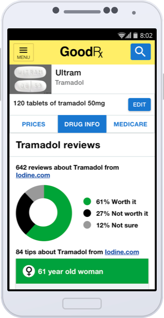
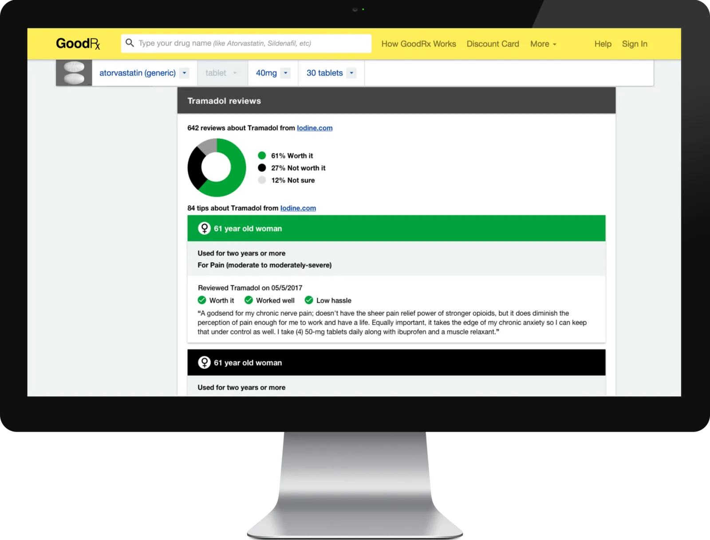
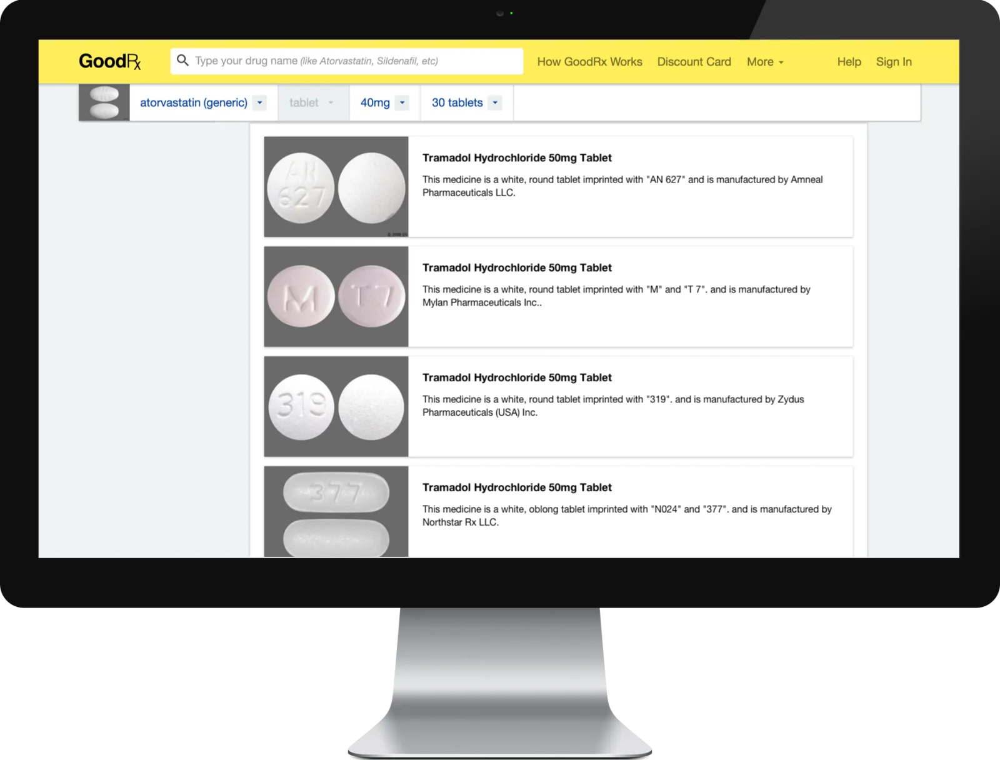
Mobile update on How GoodRx Works
A mobile version of this page didn’t exist so we used this opportunity to also update the design and make a mobile version. See the mobile prototype.
Data Visualization and Infographics
I worked on a variety of data visualizations with the GoodRx Research team. All have been published on the GoodRx Blog and a few have been referenced in The New York Times and Good Morning America/ABC News.
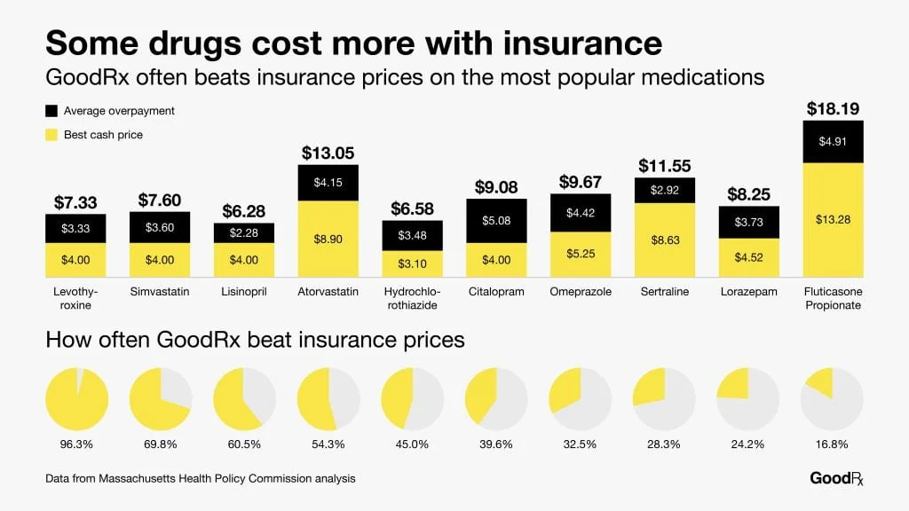
Comparing drug prices with GoodRx vs insurance
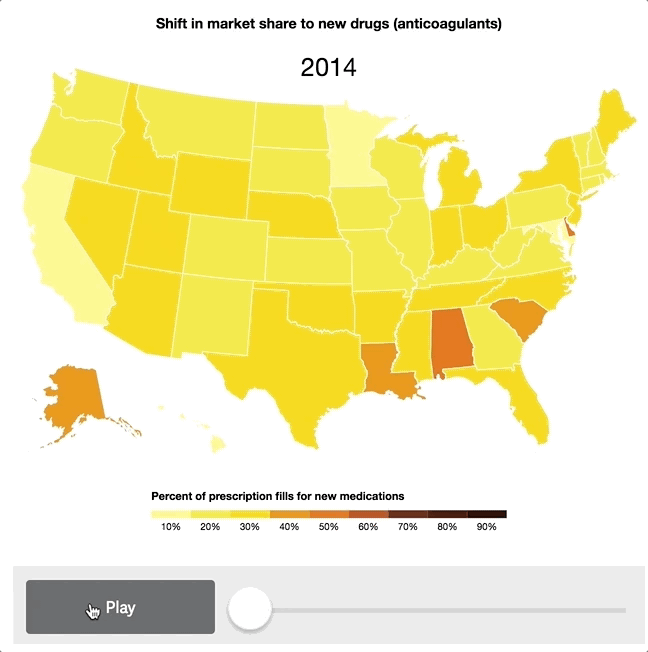
Shift in market share to new drugs (anticoagulants)

Most popular drugs in the U.S.
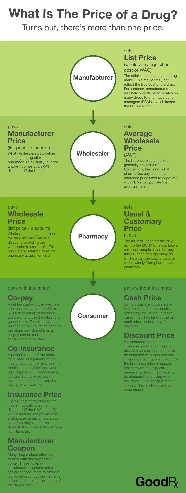
How drug pricing works

Most expensive cities for drugs(Referenced in The New York Times: https://www.nytimes.com/2018/07/06/health/drug-prices-cities.html)
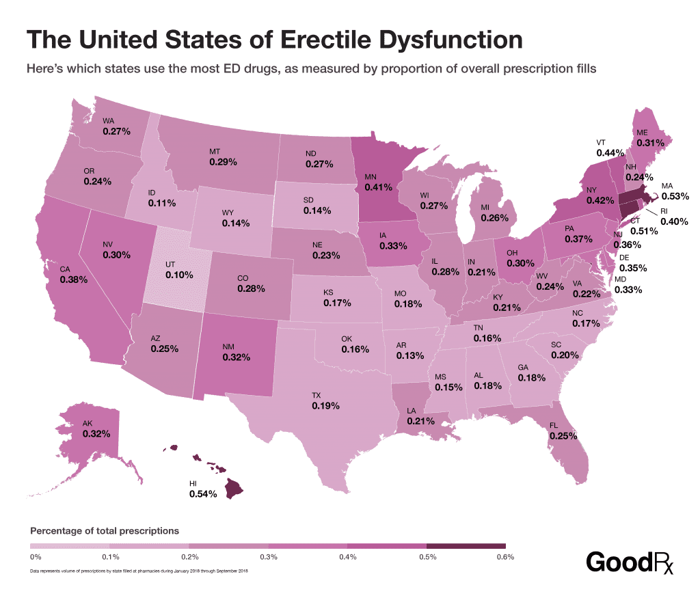
Erectile dysfunction drugs map
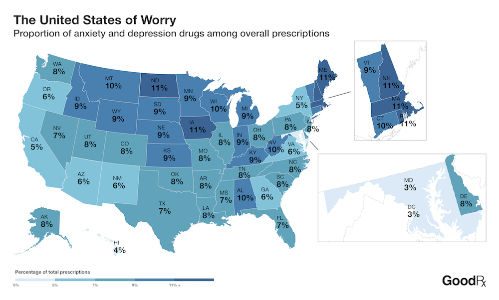
Depression and anxiety drug map
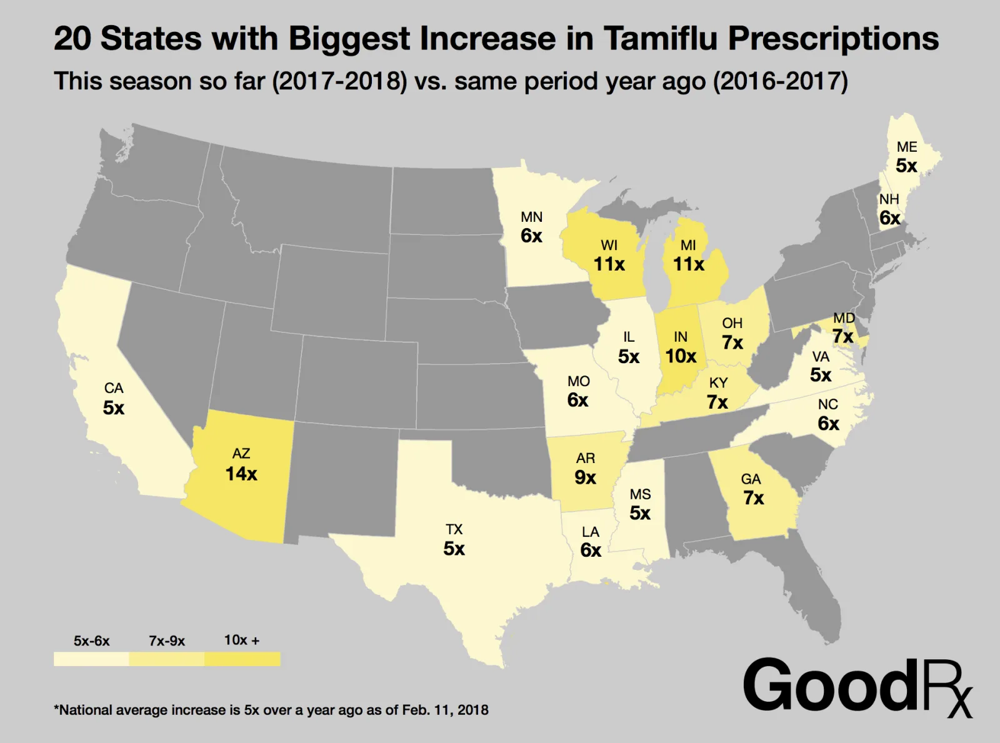
Increase in flu prescriptions map(Collaborated with and referenced in Good Morning America/ABC News: https://abcnews.go.com/GMA/Wellness/video/flu-numbers-show-growing-outbreak-us-53014507)
Stickers
For every shipped product/feature that required a substantial amount of effort, I would create and get stickers printed to give to my team. Here are a few that I’ve done.
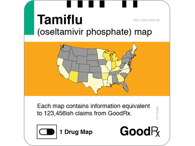
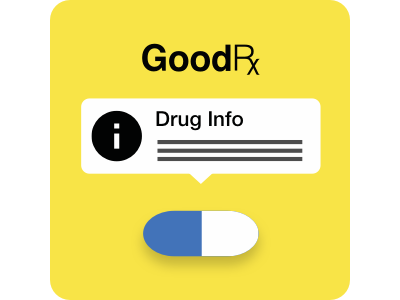